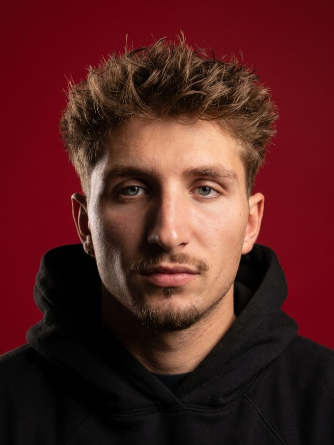
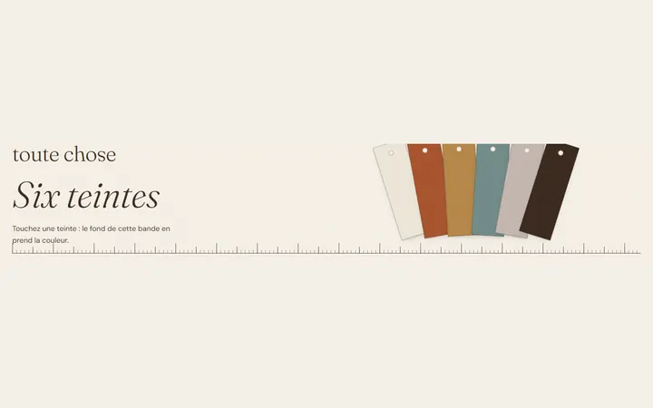
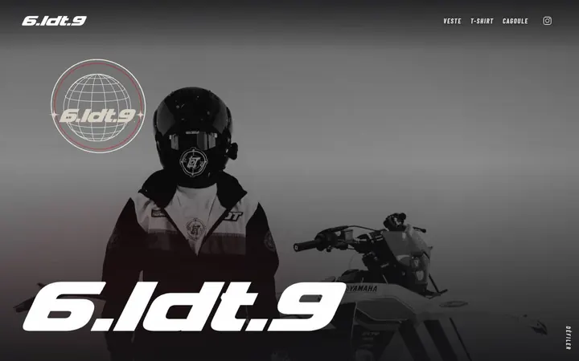
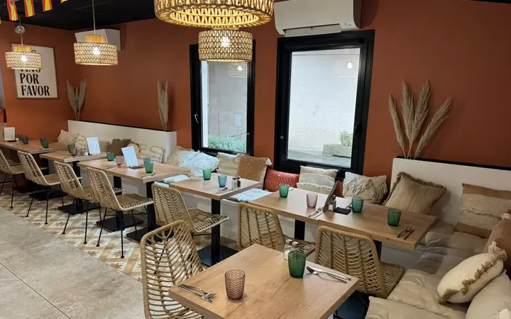
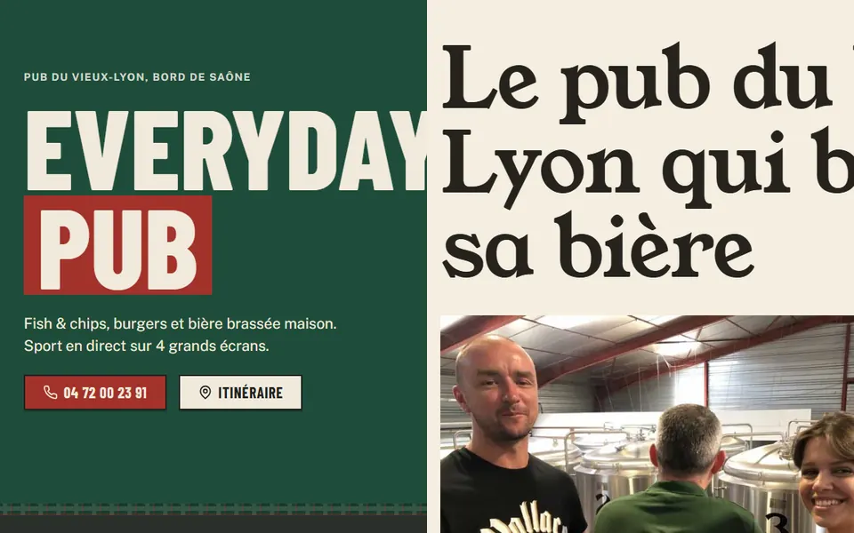
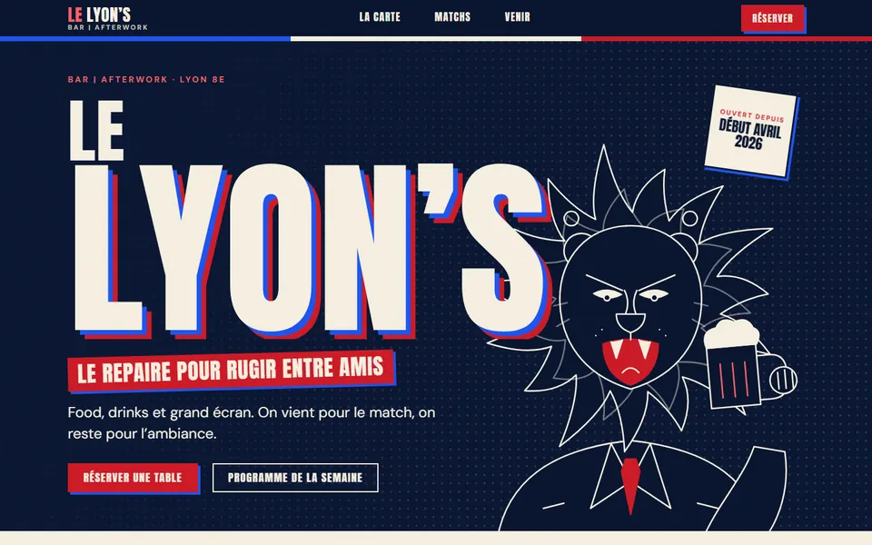
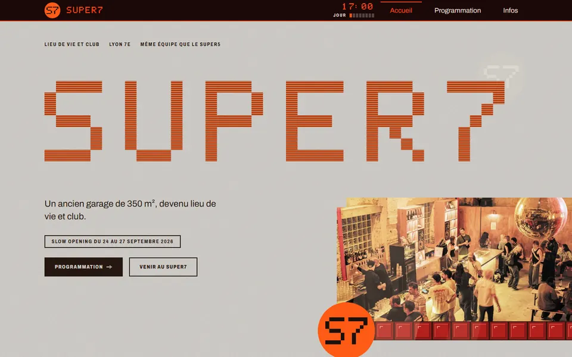

Vitrine Branding Visuel
Mon travail d’identité visuelle et mon univers graphique.
Voir la vitrineInformatique et branding visuel : je relie le code et l’image pour des sites soignés.
Je suis diplômé en informatique et en branding visuel, basé à Lyon. Cette page réunit ma vitrine de branding visuel, mon offre de création de sites web et une sélection de réalisations.

Mon travail d’identité visuelle et mon univers graphique.
Voir la vitrineCréation de sites sur mesure, tarifs et formules de suivi.
Voir les tarifs
Refonte d’un site de décoratrice d’intérieur à Lyon : page unique, palette et direction éditoriale.
Polices Fraunces, DM Sans
Le site se lit comme le dossier papier d’une décoratrice posé sur une table : nuancier, étiquettes d’échantillon, règle graduée.
Maquette de refonte non officielle de rocamboles.com, le site de Christel Duperray, décoratrice d’intérieur à Lyon. Une page unique en HTML, CSS et JS, sans dépendance. Dépôt créé le 14 octobre 2026.
Le dossier contient un audit du site actuel, la direction artistique et une relecture critique. La palette a été mesurée sur les photos du site d’origine, que la maquette lie depuis rocamboles.com sans les inclure dans le dépôt. Le bleu marine et le corail du site actuel sont abandonnés.

Vitrine d’une marque de vêtements : veste, t-shirt et cagoule présentés, sans boutique en ligne.
Polices Barlow Condensed, DM Sans, JetBrains Mono
Direction « HUD sobre » : globe 3D, fond qui change de couleur à chaque section, cadres de visée et indicateur de section.
Vitrine d’une marque de streetwear moto à Lyon (description du dépôt). Les prix sont affichés en texte, sans achat en ligne. Dépôt créé le 13 octobre 2026, premier commit le 14 : site statique, motion design et SEO de base.
Le 16 octobre, la vitrine reçoit des promotions sur le t-shirt et la cagoule (ancien prix barré) et une section « Pack du moment » avec quatre packs, aux montages photo provisoires. Le pied de page renvoie vers la vitrine développeur.

Maquette de refonte du site d’un restaurant, bodega et traiteur : carte, ambiance et contact.
Polices Archivo, Source Serif 4
Concept « Ardoise et étiquette » : fond vert bouteille, titres larges en capitales, prix posés comme sur les ardoises et les boîtes de conserve du lieu.
Maquette non officielle du site laleona.fr, construite en local le 13 octobre 2026 puis publiée dans le dépôt laleona-maquette, dont la description la dit présentée au client. Treize pages : accueil, restaurant, carte, traiteur, épicerie fine, évènementiel, contact et pages légales.
La carte est retranscrite en texte et 24 images du site d’origine sont reprises. Le site actuel (WordPress, fond blanc et noir, terracotta) cède la place à un thème sombre vert bouteille unique. Contenus et photos appartiennent à La Leona.

Refonte du site d’un pub du Vieux-Lyon en deux versions : pub vivant et brasserie éditoriale.
Version A, pub vivant
Polices Barlow Condensed, Public Sans, Newsreader
Ardoise et affiche de match : vert bouteille, titres condensés en capitales, craie jaune.
Version B, brasserie éditoriale
Polices Young Serif, Karla
Brasserie et carte imprimée : fond kraft clair, mise en page éditoriale.
Accès direct : Version A · Version B
Maquette non officielle du site de Wallace Bar, pub du Vieux-Lyon (2 rue Octavio Mey, Lyon 5e). La première version, une page unique en noir et or avec Fraunces, DM Sans et JetBrains Mono, date du 15 octobre 2026.
Le 20 octobre, un plan de refonte s’appuie sur les faits relevés sur wallacebarlyon.com : un pub vivant et sportif, bière brassée sur place, sport sur 4 écrans, quiz du lundi. Deux versions en découlent, avec les mêmes informations officielles (carte, prix, horaires, bières). Une passe de corrections a suivi une relecture critique.
Les photos viennent du site officiel et sont utilisées en attente de l’accord du patron, comme l’indique la mention en pied de page.

Maquette de site pour un bar afterwork et grand écran : programme des matchs, carte, infos pratiques.
Polices Anton, DM Sans
Un mur d’affiches de bar de sport : titres condensés, filets tricolores, lion dessiné au trait. Rose et cyan néon réservés au bloc Blind Test.
Proposition de site pour un bar récemment ouvert qui n’en a pas encore : Le Lyon’s, 46 avenue Paul Santy (Lyon 8e), ouvert début avril 2026 selon les éléments transmis. La v1 (marine, laiton, serif) a été écartée. La v2, publiée le 16 octobre 2026 dans le dépôt maquettes-bars-lyon, repart de zéro au plus près de l’Instagram @bar_le_lyons.
Le lion est dessiné pour la maquette, sans copie du logo réel. Aucune photo du bar n’est reprise : des cadres marqués « PHOTO À FOURNIR PAR LE BAR » les attendent. Le programme de la semaine est présenté comme un exemple vu sur Instagram, à confirmer, et les horaires restent à valider.

Maquette de site pour un lieu de vie et club : programmation, horaires, accès, photos du lieu.
Polices Super7 Pixel, Archivo
Concept « 17h à 01h » : la page va du béton gris de l’ancien garage au rouge des briques de verre, avec une horloge pixel dans l’en-tête.
Proposition de site pour un lieu récemment ouvert qui n’en a pas encore : Super7, 40 rue Saint-Jérôme (Lyon 7e), ouvert du jeudi au dimanche de 17 h à 1 h d’après la bio Instagram, même équipe que le Super5. Slow opening du 24 au 27 septembre 2026. Contenus tirés du brief et du compte @super7_lyon.
La direction a évolué en quatre temps : v1, puis v2 (affiche de club typographique, briques de verre, programmation en affiche hebdomadaire), v2.1 après l’analyse des affiches du compte (couleurs mesurées, 6 photos) et v3 (12 photos HD du compte, mobile d’abord). Publiée le 16 octobre 2026 dans le dépôt maquettes-bars-lyon.
Les photos sont © Super7, reprises pour la maquette et à remplacer par les originaux du bar. Les informations non vérifiées sont marquées « À CONFIRMER ».